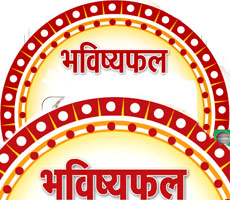

| रत्न सलाह | |
|---|---|
रत्न चिकित्सा और ग्रहों से सम्बन्धित रोग (Gem Therapy and Diseases Related to Planets)प्राचीन काल से रोगों के उपचार हेतु रत्नों का प्रयोग विभिन्न रूपों में किया जाता रहा है.रत्नों में चुम्बकीय शक्ति होती है जिससे वह ग्रहों की रश्मियों एवं उर्जा को अवशोषित कर लेती है (Gems have therapeutic value due to their innate power). |
|
शुभ राशि रत्न (Auspicious Gemstone)पविवाह समय निर्धारण के लिये सबसे पहले कुण्डली में विवाह के योग देखे जाते है. इसके लिये सप्तम भाव, सप्तमेश व शुक्र से संबन्ध बनाने वाले ग्रहों का विश्लेषण किया जाता है. जन्म कुण्डली में जो भी ग्रह अशुभ या पापी ग्रह होकर इन ग्रहों से दृ्ष्टि, युति या स्थिति के प्रभाव से इन ग्रहों से संबन्ध बना रहा होता है. वह ग्रह विवाह में विलम्ब का कारण बन रहा होता है |
|
 |
क्या होता है राशि रत्न (What are Moonsign Gems)जीवन में आ रही परेशानियों का हल निकालने के लिए हम ज्योतिषशास्त्रियों की सलाह से रत्न धारण करते हैं. रत्नों के बाजार में इन दिनों नकली रत्नों को भी असली बताकर बेचा जा रहे है |
 |
भाग्य और रत्न (Destiny and Gemstones)रत्नों में चमत्कारी शक्ति है जो ग्रहों के विपरीत प्रभाव को कम करके ग्रह के बल को बढ़ते है. आइये जानें कि भाग्य को बलवान बनाने के लिए रत्न किस प्रकार धारण करना चाहिए |
शुभ रुद्राक्ष ( Auspicious Rudraksha)रूद्राक्षजाबालोपनिषद रूद्राक्ष से संबंधित उपनिषद है यह उपनिषद सामवेदीय शाखा के अंतर्गत आता है जिसमें भगवान शिव के 'रुद्राक्ष' की महत्ता को व्यक्त किया गया है. इस उपनिषद में रूद्राक्ष से संबंधित अनेक प्रश्नों का उत्तर प्राप्त होता हैगर्भ गौरी रूद्राक्ष माता गौरी और उनके पुत्र भगवान गणेश जी का स्वरूप माना जाता है. यह गर्भ गौरी रुद्राक्ष गौरी शंकर के समान ही दिखाई पड़ता है. जहां गौरी शंकर रुद्राक्ष में रुद्राक्ष का आकार एक समान होता है इक्कीस मुखी रूद्राक्ष भगवान कुबेर को दर्शाता है जो धन-संपदा के स्वामी हैं, इसके अतिरिक्त यह रुद्राक्ष भगवान शिव का प्रतिनिधित्व भी करता है. 21 मुखी रुद्राक्ष सभी रुद्राक्षों में एक बेहतरीन रुद्राक्ष है उन्नीस मुखी रुद्राक्ष भगवान शिव-पार्वती तथा गणेश जी का प्रतीक माना गया है. यह रुद्राक्ष प्रभु नारायण का प्रतिनिधित्व करता है. जो भी इसे धारण करता है वह सभी सांसारिक सुखों को प्राप्त करता है |
|